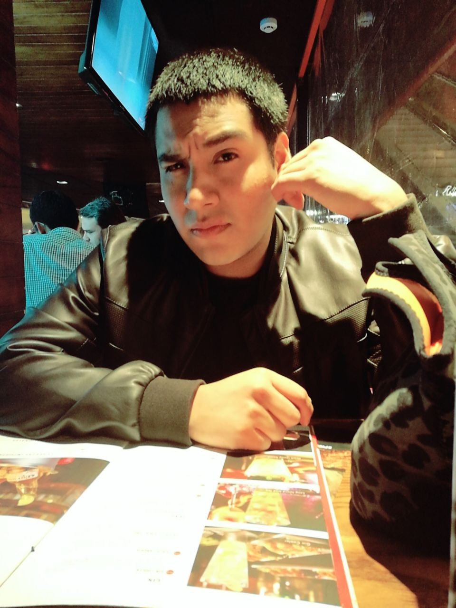

Hoja de Vida
Informacion Personal

Datos
- Nombres:Liber Angel
- Apellidos: Condori Rojas
- Edad: 25 años
- Lima, Peru
- 23/03/93
Estudiante de 25 años con muchas ganas de aprender sobre programación y diversos temas de tecnología. Facilidad de aprendizaje y autodidacta.
Idiomas